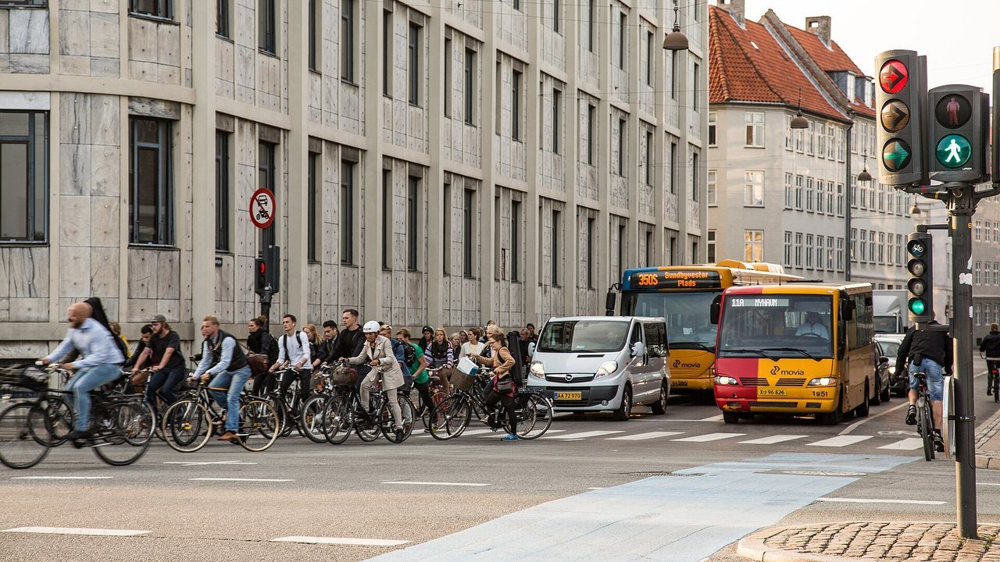

Race, Copenhagen Cycle Superhighway

Behind
Best +0:01
371W
Target 418 W-47 W
- Cadence
- 87rpm
- Heart
- 140bpm
- Speed
- 26.5km/h
Warm-up1 of 17
3:49
Next: · 2:00 at level 14
+0.1%
0 m climbed
0.07 km
12
Resistance / 32
Solo races your best-time ghost: position reads Ahead or Behind, and solo alone gets a Pause button. Frozen at 0:11.